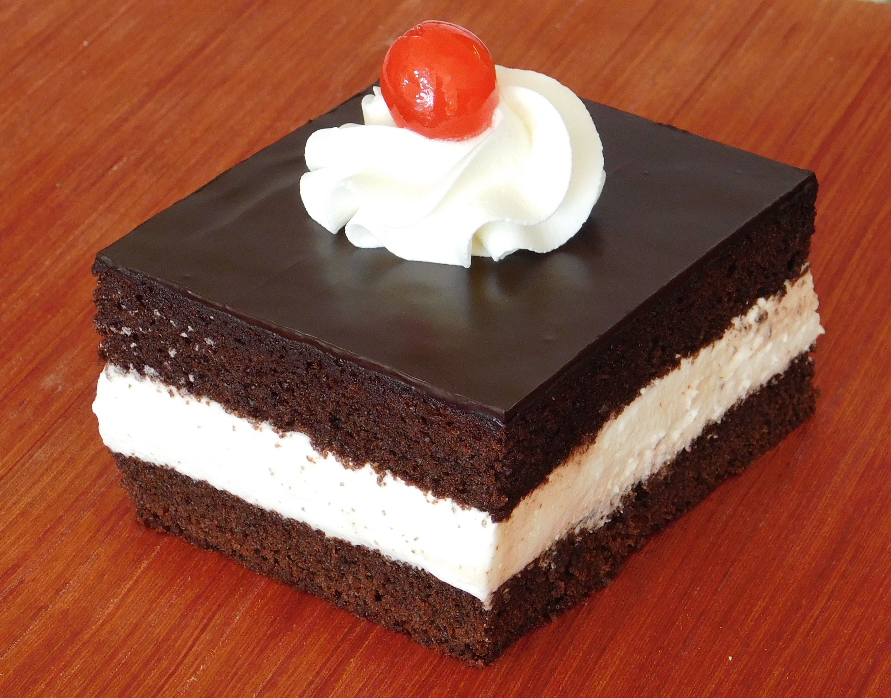

Bolo de Chocolate
Serve 15 porções.

Ingedientes:
Massa:
- 2 xícaras (chá) de farinha de trigo
- 1\2 xícara de chocolate em pó
- 3 colheres (sopa) margarina
- 3 ovos grandes
- 1 xícara (chá) leite gelado
- 1 xícara (chá) de açúcar refinado
- 1 colher sopa bem cheia de fermento em pó
Cobertura:
- 250 ml. de leite
- 1 xícara (chá) de leite condensado
- 2 gemas peneiradas
- 1 colher (sopa) de amido de milho
- 1 xícara (chá) de chocolate ao leite picado
- 1 xícara (chá) de creme de leite
- *raspas de chocolate para decorar
Modo de preparo:
- Bater as claras em neve,reservar. Passar as gemas pela peneira,
Bater as gemas, açúcar é margarina,até obter um creme fofo.
Desligue a batedeira e acrescentar o leite, mexer,
acrescentar a farinha é o chocolate, mexer, bater um pouco para misturar os ingredientes,
desligue a batedeira é acrescente delicadamente o fermento é as claras em neve.
Assar a 180 por mais ou menos 35 minutos,em forma 20 cm.
untada é enfarinhada somente no fundo.
- Misture todos os ingredientes em uma panela,(menos o creme de leite),
leve ao fogo médio, mexendo sempre até engrossar.
Tire do fogo é acrescente o creme de leite.
- Montagem: Depois do bolo assado é frio, desenforme,
jogar a cobertura por cima é as raspas de chocolate.
Fonte: Receita Gshow